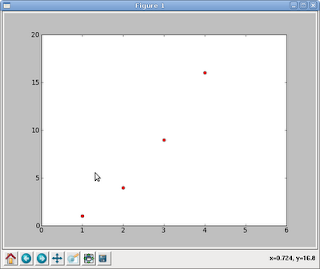
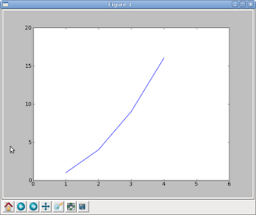

Tutoriales de matplotlib con python. Parte 2
Posted on mar 16 junio 2009 in Tutorial Python • 1 min read
Ahora se mostrará como se definen unos puntos en el gráfico, se define el rango de los ejes.
ernesto@zvezda:~/bin$ python2.5
Python 2.5.4 (r254:67916, Feb 17 2009, 20:16:45)
[GCC 4.3.3] on linux2
Type "help", "copyright", "credits" or "license" for more information.
>>> import matplotlib.pyplot as plt
>>> plt.plot([1,2,3,4], [1,4,9,16], 'ro')
[]
>>> plt.axis([0, 6, 0, 20])
[0, 6, 0, 20]
>>> plt.show()
La diferencia con el anterior es que se definen las coordenadas y se pasa el parámetro 'ro', este hace que sólo se muestre los puntos en vez de una curva en el gráfico; luego se define los ejes de 0 a 6 y de 0 a 20.

El siguiente ejemplo es uniendo los puntos, para ello se le quita el parámetro 'ro' al pasar las coordenadas:
>>> import matplotlib.pyplot as plt
>>> plt.plot([1,2,3,4], [1,4,9,16])
[]
>>> plt.axis([0, 6, 0, 20])
[0, 6, 0, 20]
>>> plt.show()

===
¡Haz tu donativo! Si te gustó el artículo puedes realizar un donativo con Bitcoin (BTC) usando la billetera digital de tu preferencia a la siguiente dirección: 17MtNybhdkA9GV3UNS6BTwPcuhjXoPrSzV
O Escaneando el código QR desde billetera: